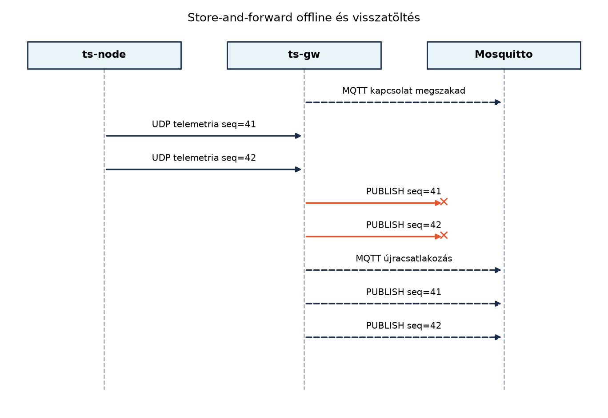

A hálózatkiesés az IoT-edge rétegben nem ritka esemény, hanem
tervezési feltétel. A TerraSense üvegházában a ts-node
szenzorok továbbra is mérik a hőmérsékletet, páratartalmat és
talajnedvességet, a ts-gw gateway viszont nem tudja az
MQTT-üzeneteket a brokerhez eljuttatni, mert a helyi hálózat vagy a
felhőkapcsolat megszakadt. Ha ilyenkor a gateway egyszerűen eldobná a
beérkező telemetriát, értékes adatok vesznének el, és a későbbi
elemzések, riasztások hiányosak lennének. A megoldás a
store-and-forward (tárolás és továbbítás): az offline
időszakban a gateway perzisztens puffert használ, majd a kapcsolat
helyreállása után sorrendhelyesen visszatölti az adatokat, miközben
jelzi az esetleges duplikációkat.
Definíció (store-and-forward). A store-and-forward olyan üzenetkezelési minta, amelyben a köztes csomópont (itt a gateway) az üzenetet először tartósan tárolja, majd a hálózati kapcsolat rendelkezésre állásakor továbbítja a cél felé. A tárolás akkor is megtörténik, ha a cél nem elérhető; így az adat nem vész el, legfeljebb késik.
Definíció (perzisztens puffer). A perzisztens puffer olyan, lemezen (vagy más nem felejtő közegen) tárolt várakozási sor, amely túléli a folyamat újraindulását is. A memóriapufferrel szemben nem törlődik áramszünet vagy processzkilépés esetén.
A ts-gw C++ szolgáltatás már rendelkezik az alapvető
protokollfordítással: a bejövő UDP/BLE üzeneteket MQTT publish-csomaggá
alakítja, és elküldi a brokerre. A store-and-forward réteg beillesztése
a következő logikával bővíti ezt:
node_id és a monoton seq
párost. Ez azonosítja az eszköz egy adott mérési csomagját.UNIQUE(node_id, seq) megkötéssel, hogy ugyanaz a csomag ne
kerülhessen be kétszer.id szerinti sorrendben, egyesével
továbbítja.PUBLISH (QoS 1 esetén a
PUBACK megérkezése) után a rekord törlődik a pufferből. Ha
a publish kivételt dob, a rekord a pufferben marad, és a ciklus
újrapróbálkozik.
A puffer megvalósításához SQLite-ot használunk, WAL (Write-Ahead Logging) módban. A WAL lehetővé teszi, hogy az olvasó műveletek ne blokkolják az írót, és fordítva, ami akkor fontos, ha a publisher szál folyamatosan olvassa a sort, miközben az UDP-fogadó szál írja. A tranzakciók biztosítják, hogy a beszúrás vagy a törlés atomi legyen, és a folyamat váratlan leállása esetén sem sérüljön a tábla.
Tábla (spool séma).
| Oszlop | Típus | Megkötés | Leírás |
|---|---|---|---|
id |
INTEGER | PRIMARY KEY AUTOINCREMENT | Visszatöltési sorrend |
node_id |
TEXT | NOT NULL | Eszközazonosító (pl. n001) |
seq |
INTEGER | NOT NULL | Monoton sorszám (eszköz által generált) |
ts |
INTEGER | NOT NULL | Eredeti eseményidő, epoch ms UTC |
topic |
TEXT | NOT NULL | Cél MQTT topic |
payload |
TEXT | NOT NULL | Sorosított üzenet |
UNIQUE(node_id, seq) |
Deduplikáció |
A gateway a payload mezőt nem elemzi tovább, hanem az
eredeti bájtokat vagy szöveget tárolja, így a visszatöltés bitazonos
üzenetet küldhet. Ha az üzenet JSON, a payload a teljes
JSON-szöveg; ha később CBOR-ra váltunk, a payload akár BLOB is
lehet.
Memóriapuffer vs. lemezes puffer. A memóriapuffer gyors, de nem vészeli át a folyamat újraindulását. Mivel a gateway kritikus adatútközvetítő, a lemezes puffer az alapértelmezés. A memóriapuffert legfeljebb a lemez előtti gyors átmeneti sorként érdemes használni.
SQLite vs. append-only fájl. Az append-only napló egyszerűbb, de a törlés utáni üresedés, a töredezettség és a konzisztens tranzakciók kezelése kézi munkát igényel. Az SQLite beépített tranzakciókat, lekérdezéseket és WAL-t ad, és C++-hoz is egyszerűen linkelhető.
Korlát és eldobási stratégia. A lemez véges. Meg kell határozni a puffer maximális méretét (például rekordszámban vagy bájtban). Ha a puffer megtelik, két gyakori stratégia van:
A TerraSense-ben a drop-oldest a választott stratégia, mert a riasztásoknak és a valós idejű megfigyelésnek jobban kedvez a friss adat, a történeti elemzés pedig ritkán igényel teljes offline időszakot másodperc pontossággal.
| Szempont | SQLite WAL | Append-only fájl | Memóriapuffer |
|---|---|---|---|
| Túlélés újrainduláskor | igen | igen | nem |
| Tranzakciós biztonság | igen | kézzel | nem értelmezett |
| Olvasás írás közben | jól támogatott | nehézkes | triviális |
| Lekérdezés és korlát | SQL, könnyű | saját kód | saját kód |
| Bonyolultság | közepes | kisebb kezdetben | kicsi |
Tegyük fel, hogy a broker 10:00:00-kor leáll. A ts-node
továbbra is küldi a telemetriát 10 másodpercenként. A gateway a 10:00:10
és 10:00:30 között érkező üzeneteket a pufferbe írja. 10:01:00-kor a
broker újra elérhető, a publisher szál pedig megkezdi a
visszatöltést.
| Idő (UTC) | Esemény | Puffer tartalom (id, node_id, seq) |
|---|---|---|
| 10:00:00 | broker leáll | üres |
| 10:00:10 | UDP telemetria n001 seq=41 |
(1, n001, 41) |
| 10:00:20 | UDP telemetria n001 seq=42 |
(1, n001, 41), (2, n001, 42) |
| 10:00:30 | UDP telemetria n001 seq=43 |
(1..3, n001, 41..43) |
| 10:01:00 | broker újra elindul | (1..3, n001, 41..43) |
| 10:01:00.2 | PUBLISH seq=41 sikeres, törlés | (2, 42), (3, 43) |
| 10:01:00.4 | PUBLISH seq=42 sikeres, törlés | (3, 43) |
| 10:01:00.6 | PUBLISH seq=43 sikeres, törlés | üres |
A visszatöltés sorrendjét az id oszlop garantálja, így a
backend az eseményidőtől függetlenül a gateway általi fogadási
sorrendben kapja az üzeneteket. Az seq mező a backend felé
megőrzi az eszköz szerinti sorrendet, és az ts a mért
időt.
Munkakönyvtár: ~/iot-labor/i037
Előfeltétel: az A ts-gw
szolgáltatás C++-ban: protokollfordítás MQTT-re alfejezetben
elkészített ~/iot-labor/i036/ts-gw projekt.
mkdir -p ~/iot-labor/i037 && cd ~/iot-labor/i037
cp -r ~/iot-labor/i036/ts-gw .
cd ts-gwElőször adjuk hozzá a store_forward.hpp fejlécfájlt:
// store_forward.hpp
#pragma once
#include <cstdint>
#include <string>
#include <vector>
struct SpoolRecord {
int64_t id;
std::string node_id;
uint32_t seq;
int64_t ts;
std::string topic;
std::string payload;
};
class StoreForwardDb {
public:
explicit StoreForwardDb(const std::string& path);
~StoreForwardDb();
void initialize(); // WAL mód, tábla létrehozása
void enqueue(const std::string& node_id, uint32_t seq, int64_t ts,
const std::string& topic, const std::string& payload);
std::vector<SpoolRecord> pending(); // rendezve: id
void remove(int64_t id);
private:
sqlite3* db_;
};Az store_forward.cpp az SQLite C API-t használja:
// store_forward.cpp
#include "store_forward.hpp"
#include <sqlite3.h>
#include <stdexcept>
#include <utility>
StoreForwardDb::StoreForwardDb(const std::string& path) {
if (sqlite3_open(path.c_str(), &db_) != SQLITE_OK) {
throw std::runtime_error("sqlite3_open failed");
}
}
StoreForwardDb::~StoreForwardDb() {
if (db_) sqlite3_close(db_);
}
void StoreForwardDb::initialize() {
const char* sql =
"PRAGMA journal_mode=WAL;"
"CREATE TABLE IF NOT EXISTS spool ("
" id INTEGER PRIMARY KEY AUTOINCREMENT,"
" node_id TEXT NOT NULL,"
" seq INTEGER NOT NULL,"
" ts INTEGER NOT NULL,"
" topic TEXT NOT NULL,"
" payload TEXT NOT NULL,"
" UNIQUE(node_id, seq)"
");";
char* errmsg = nullptr;
if (sqlite3_exec(db_, sql, nullptr, nullptr, &errmsg) != SQLITE_OK) {
std::string msg = errmsg ? errmsg : "unknown";
sqlite3_free(errmsg);
throw std::runtime_error("initialize failed: " + msg);
}
}
void StoreForwardDb::enqueue(const std::string& node_id, uint32_t seq, int64_t ts,
const std::string& topic, const std::string& payload) {
const char* sql = "INSERT INTO spool (node_id, seq, ts, topic, payload) "
"VALUES (?,?,?,?,?) ON CONFLICT(node_id, seq) DO NOTHING;";
sqlite3_stmt* stmt = nullptr;
if (sqlite3_prepare_v2(db_, sql, -1, &stmt, nullptr) != SQLITE_OK) {
throw std::runtime_error("prepare failed");
}
sqlite3_bind_text(stmt, 1, node_id.c_str(), -1, SQLITE_TRANSIENT);
sqlite3_bind_int64(stmt, 2, seq);
sqlite3_bind_int64(stmt, 3, ts);
sqlite3_bind_text(stmt, 4, topic.c_str(), -1, SQLITE_TRANSIENT);
sqlite3_bind_text(stmt, 5, payload.c_str(), -1, SQLITE_TRANSIENT);
if (sqlite3_step(stmt) != SQLITE_DONE) {
sqlite3_finalize(stmt);
throw std::runtime_error("insert failed");
}
sqlite3_finalize(stmt);
}
std::vector<SpoolRecord> StoreForwardDb::pending() {
std::vector<SpoolRecord> result;
const char* sql = "SELECT id, node_id, seq, ts, topic, payload "
"FROM spool ORDER BY id;";
sqlite3_stmt* stmt = nullptr;
if (sqlite3_prepare_v2(db_, sql, -1, &stmt, nullptr) != SQLITE_OK) {
throw std::runtime_error("prepare failed");
}
while (sqlite3_step(stmt) == SQLITE_ROW) {
SpoolRecord rec;
rec.id = sqlite3_column_int64(stmt, 0);
rec.node_id = reinterpret_cast<const char*>(sqlite3_column_text(stmt, 1));
rec.seq = sqlite3_column_int64(stmt, 2);
rec.ts = sqlite3_column_int64(stmt, 3);
rec.topic = reinterpret_cast<const char*>(sqlite3_column_text(stmt, 4));
rec.payload = reinterpret_cast<const char*>(sqlite3_column_text(stmt, 5));
result.push_back(std::move(rec));
}
sqlite3_finalize(stmt);
return result;
}
void StoreForwardDb::remove(int64_t id) {
const char* sql = "DELETE FROM spool WHERE id=?;";
sqlite3_stmt* stmt = nullptr;
if (sqlite3_prepare_v2(db_, sql, -1, &stmt, nullptr) != SQLITE_OK) {
throw std::runtime_error("prepare failed");
}
sqlite3_bind_int64(stmt, 1, id);
if (sqlite3_step(stmt) != SQLITE_DONE) {
sqlite3_finalize(stmt);
throw std::runtime_error("delete failed");
}
sqlite3_finalize(stmt);
}A main.cpp-ben a puffer használata a publish
ciklusban:
// ts-gw/src/main.cpp (kivonat)
#include "store_forward.hpp"
#include <mqtt/client.h>
#include <chrono>
#include <iostream>
#include <thread>
int main() {
StoreForwardDb spool("/var/lib/ts-gw/spool.db");
spool.initialize();
mqtt::client mqtt("tcp://localhost:1883", "ts-gw");
bool connected = false;
while (true) {
// csatlakozás, ha nem elérhető
if (!connected) {
try {
mqtt.connect();
connected = true;
} catch (const std::exception& e) {
std::cerr << "MQTT reconnect failed: " << e.what() << "\n";
std::this_thread::sleep_for(std::chrono::seconds(2));
continue;
}
}
// visszatöltés sorrendben
auto records = spool.pending();
for (const auto& rec : records) {
try {
mqtt.publish(rec.topic, rec.payload, 1, false);
spool.remove(rec.id);
} catch (const std::exception& e) {
std::cerr << "publish failed, staying in spool: " << e.what() << "\n";
connected = false;
break;
}
}
std::this_thread::sleep_for(std::chrono::milliseconds(100));
}
}A mqtt::client::publish QoS 1 használatakor a hívás
blokkol, amíg a PUBACK meg nem érkezik, így a gateway
tudja, hogy a broker elfogadta. Ha a kapcsolat közben megszakad,
kivételt kapunk, a rekord a pufferben marad, és a ciklus később
újrapróbálja.
A CMakeLists.txt-hez adjuk hozzá az SQLite-ot és a
store_forward.cpp-t:
# CMakeLists.txt (részlet)
find_package(PkgConfig REQUIRED)
pkg_check_modules(SQLITE3 REQUIRED sqlite3)
add_executable(ts-gw
src/main.cpp
src/store_forward.cpp
# ... korábbi forrásfájlok
)
target_link_libraries(ts-gw PRIVATE
paho-mqttpp3
${SQLITE3_LIBRARIES}
)
target_include_directories(ts-gw PRIVATE ${SQLITE3_INCLUDE_DIRS})A build és futtatás:
cd ~/iot-labor/i037/ts-gw
mkdir -p build && cd build
cmake .. && make
./ts-gwIndítsuk el a Mosquitto-t a közös stackből, majd teszteljük offline és online szakaszokkal:
# külön terminálban
cd ~/iot-labor/stack
docker compose up -d mosquitto
# node szimuláció UDP-vel (küldjön 5 mintát)
python3 ../../i017/udp_sender.py --count 5Ellenőrizzük a puffer tartalmát, miután leállítottuk a brokert:
docker stop mosquitto
# küldjünk 3 újabb mintát
python3 ../../i017/udp_sender.py --count 3
sqlite3 /var/lib/ts-gw/spool.db 'SELECT id, node_id, seq, ts FROM spool;'Várt kimenet: a három új rekord megjelenik. Most indítsuk újra a brokert, és figyeljük a visszatöltést:
docker start mosquitto
# subscribe minden terrasense/# topicra
mosquitto_sub -t 'terrasense/#' -vA publisher szál visszatölti a puffert; a kimenetben a három üzenet
sorrendben jelenik meg, majd a puffer kiürül. Ismételt lekérdezéssel
ellenőrizhetjük, hogy a spool tábla üres.
| Tünet | Lehetséges ok | Javítás |
|---|---|---|
| A puffer nem ürül, a broker elérhető | A publish kivételt dob, de a hibaüzenet nem jelenik meg | Növeld a naplózást, ellenőrizd a publish visszatérési értékét, és a
connected flag kezelését |
| A visszatöltött üzenetek sorrendje nem megfelelő | A pending() lekérdezés nem
ORDER BY id |
Javítsd a SQL-t ORDER BY id-re |
| Duplikált sorok jelennek meg a pufferben | Hiányzik az UNIQUE(node_id, seq) megkötés |
Add hozzá a sémához, és használj
ON CONFLICT DO NOTHING |
| A program induláskor „database is locked” hibát ad | A WAL mód nincs bekapcsolva, vagy a fájl zárolva | Ellenőrizd a PRAGMA journal_mode=WAL futtatását, és
hogy nincs másik folyamat nyitott tranzakcióban |
remove() hívása előtt leáll, a rekord megmarad, és
újrainduláskor ismét elküldésre kerül. Ezt az
UNIQUE(node_id, seq) not only a gateway szintjén, hanem a
backendnek is kezelnie kell idempotensen (lásd Ingest: MQTT-ből a backendbe, idempotensen).publish hívás után azonnal töröl, még a
PUBACK előtt (ha QoS 1-et használ), ami adatvesztéshez
vezethet a nyugta elvesztésekor. A szinkron
mqtt::client::publish blokkol a PUBACK-ig, így
a minta kódban ez nem fordul elő, de aszinkron kliens esetén
kritikus.ts-node 5 mintát
küld 1 perc alatt (minden minta 120 B hasznos adat). A gateway offline
24 órán át. Hány rekord keletkezik, és mekkora a minimális lemezterület,
ha a rekordonkénti overhead 80 B? Add meg a választ KiB-ban (1 KiB =
1024 B), és értékeld, hogy indokolt-e a lemez.StoreForwardDb osztályt egy max_records
korláttal és drop_oldest() stratégiával: a
enqueue hívás után ha a rekordszám nagyobb, mint a korlát,
töröld a legkisebb id-jű rekordokat addig, amíg a határ alá
nem kerülsz.mosquitto_sub látja a bejövő üzeneteket. A
gateway naplója nem mutat publish hibát. Mi lehet a baj? Írd le a
diagnosztikai lépéseket.max_records és drop_oldest hozzáadásához
a enqueue végén ellenőrizni kell a rekordszámot, és ha túl
nagy, törölni a legrégibbeket. Például a initialize-ben
tárold el a korlátot, és a enqueue végén hívd meg a
delete_oldest_until_limit() metódust:void StoreForwardDb::enforce_limit(int64_t max_records) {
const char* sql = "DELETE FROM spool WHERE id IN "
"(SELECT id FROM spool ORDER BY id LIMIT "
"(SELECT MAX(0, COUNT(*) - ?) FROM spool));";
// paraméter kötés és futtatás
}connected flag hamis maradt, vagy a ciklus
continue miatt sose éri el a pending() hívást.
Ellenőrizni kell: (a) a mqtt.connect() hívás valóban
sikeres-e; (b) a connected flag értékét naplózd; (c) a
pending() lekérdezés visszaadja-e a rekordokat. A minta
kódban a continue akkor ugrik, ha a connect kivételt dob,
de utána újra próbálkozik. Ha a mqtt.connect() elsőre
sikertelen, a sleep 2 mp, majd ismét. Az a tünet, hogy a
subscribe látja a bejövő üzeneteket, arra utalhat, hogy a gateway nem
publish-öl, mert a publish ciklus sosem lép be a for
ciklusba a hiba miatt. Érdemes a pending() visszatérését is
naplózni.Az alfejezet bemutatta a gateway store-and-forward rétegét SQLite
WAL-módú perzisztens pufferrel. A StoreForwardDb osztály
enqueue(), pending() és remove()
metódusokkal kezeli a sort; a séma UNIQUE(node_id, seq)
kulccsal biztosítja a deduplikációt. A publisher ciklus a brokerhez való
sikeres QoS 1-es PUBLISH után törli a rekordot, offline
állapotban pedig a pufferben tartja. A visszatöltés id
szerinti sorrendben történik, szükség esetén késleltetéssel.
Továbbvitt eredmény. A node_id +
seq páros mint üzenetazonosító és a visszatöltési minta
megegyezik azzal, amit az Ingest: MQTT-ből a
backendbe, idempotensen a backend idempotens fogadása, valamint az
Eseményvezérelt feldolgozás: Kafka és a kézbesítési
szemantika a Kafka-topicokra írás során használ. A labor kimenete a
~/iot-labor/i037/ts-gw projekt, benne a
store_forward.hpp / .cpp és a módosított
main.cpp, valamint a CMakeLists.txt.
SQLite dokumentáció: WAL mód, PRAGMA journal_mode,
INSERT ... ON CONFLICT DO NOTHING. URL:
https://sqlite.org/docs.html (nem ellenőriztem közvetlenül).
Eclipse Paho C++ client dokumentáció:
mqtt::client::publish szinkron viselkedése QoS 1 esetén.
URL: https://eclipse.dev/paho/ (nem ellenőriztem közvetlenül).
Mosquitto dokumentáció: QoS 1 PUBACK viselkedés. URL: https://mosquitto.org/documentation/ (nem ellenőriztem közvetlenül).
Ellenőrizendő: a Paho publish
szinkron hívás pontos blokkolási garanciája az aktuális
könyvtárverzióban, valamint az SQLite C API sqlite3_open_v2
szükségessége a paraméterezett tranzakciókhoz. A
sqlite3_bind_text SQLITE_TRANSIENT makró
használata a jelen kódban működik, de a pontos szemantika verziófüggő
lehet. A CMakeLists.txt-ben a paho-mqttpp3
target neve a telepített könyvtárnak megfelelően módosulhat.